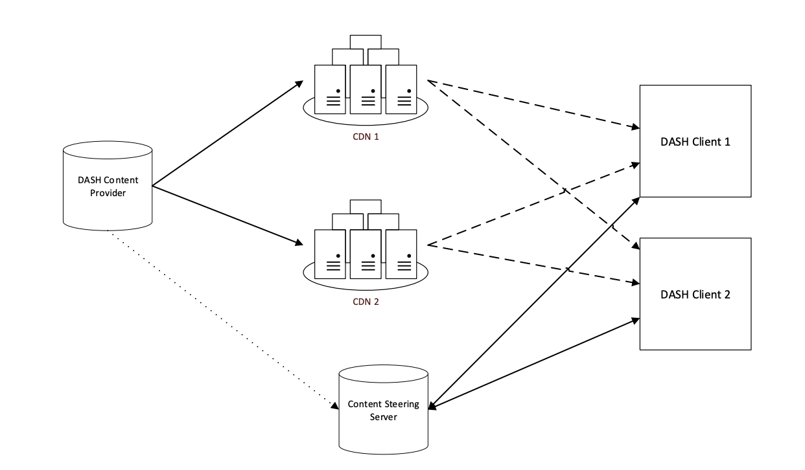

Content Steering
Description
Content distributors often use multiple Content Delivery Networks (CDNs) to distribute their content to the end-users. They may upload a copy of their catalogue to each CDN, or more commonly have all CDNs pull the content from a common origin. Alternate URLs are generated, one for each CDN, that point at identical content. DASH players may access alternate URLs in the event of delivery problems.
Content steering describes a deterministic capability for a content distributor to switch the content source that a player uses either at start-up or midstream, by means of a remote steering service. The DASH implementation of Content Steering also supports the notion of a proxy steering server which can switch a mobile client between broadcast and unicast sources.
Architecture
CDN Selection
Location Selection
MPD Source
Fragment Requests
| Type | Service Location | Request URL |
|---|---|---|
| Audio | ||
| Video |
Manifest Requests
| Service Location | Request URL |
|---|---|
Steering Data
| Attribute | Value |
|---|---|
| Timestamp | |
| Request URL | |
| Response - Version | |
| Response - Reload URI | |
| Response - Pathway Priority | |
| Response - Pathway Clones |
|
| Response - TTL |